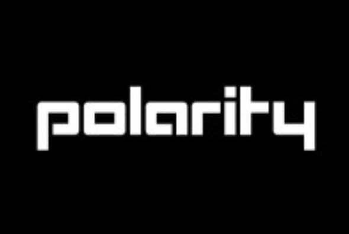
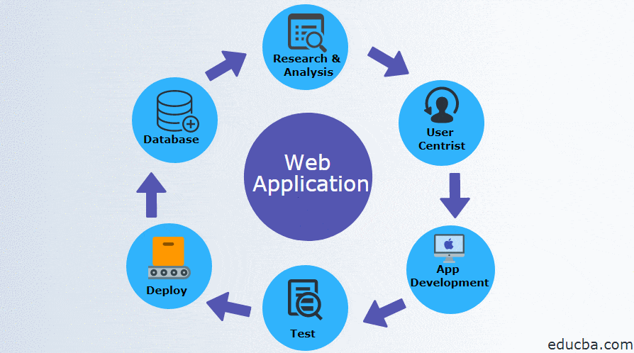
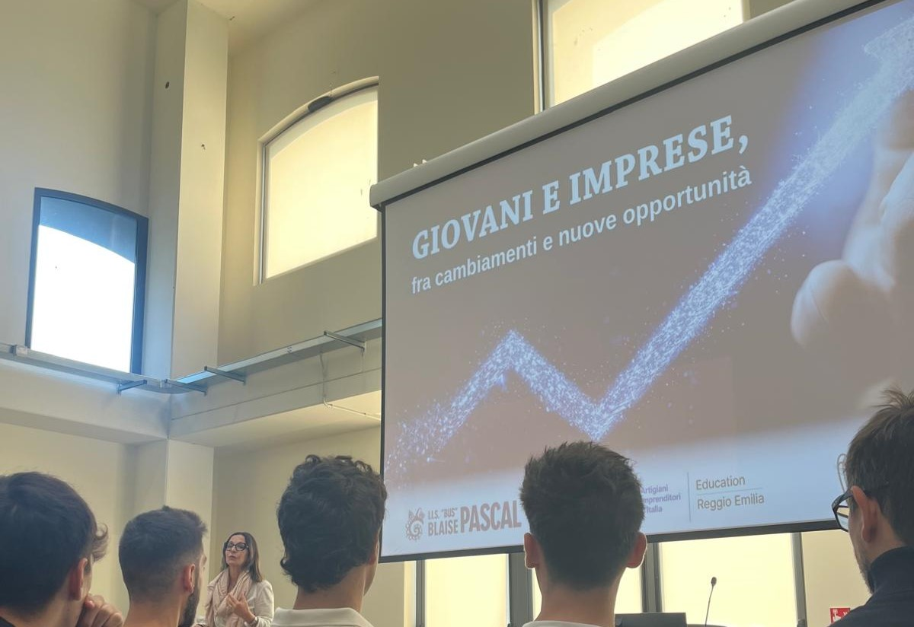
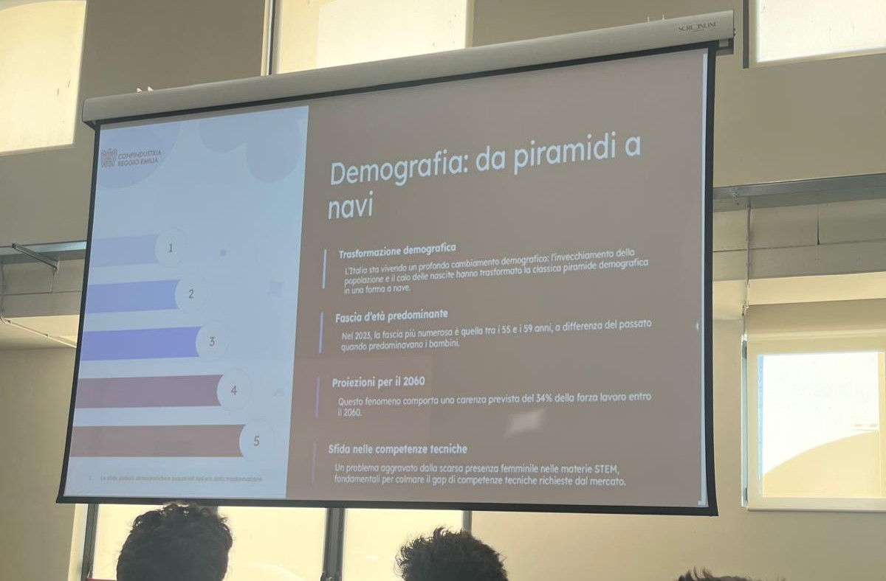

Incontro con Polarity
Abbiamo partecipato a un'attività di orientamento di due ore con l'azienda Polarity, che opera nello sviluppo software. I professionisti ci hanno parlato del mondo delle applicazioni web moderne, illustrandoci i linguaggi di programmazione più diffusi e le logiche di lavoro di un team di sviluppo.
Contenuti dell'incontro

abbiamo partecipato a un'attività di orientamento di due ore con l'azienda Polarity, che opera nello sviluppo software. I professionisti ci hanno parlato del mondo delle applicazioni web moderne, illustrandoci i linguaggi di programmazione più diffusi come JavaScript e TypeScript, e le logiche di lavoro di un team di sviluppo. Abbiamo visto come applicazioni come WhatsApp o Instagram siano sistemi articolati che richiedono app mobili, server, database e infrastruttura cloud. Ci hanno spiegato come JavaScript si sia evoluto da linguaggio per browser a strumento universale utilizzabile anche sul server con Node.js. Infine, abbiamo affrontato il tema del rapporto con il cliente e dell'importanza della qualità del codice come responsabilità professionale.
Conclusioni

Questa attività mi ha permesso di comprendere meglio la complessità che si cela dietro applicazioni che uso quotidianamente, come WhatsApp o Instagram. Ho capito che dietro ogni pulsante e ogni schermata c'è un lavoro di squadra articolato, che coinvolge diverse competenze e figure professionali. È stato stimolante scoprire come linguaggi nati per il web, come JavaScript, si siano evoluti fino a diventare strumenti versatili utilizzati in ambiti molto diversi. Inoltre, l'incontro mi ha fatto riflettere sull'importanza della qualità del codice non solo come buona pratica, ma come vera e propria responsabilità verso il cliente e gli utenti finali.
Competenze Acquisite
- Conoscenza dei linguaggi front-end e back-end
- Panoramica del mercato del lavoro IT
- Orientamento professionale nel settore web
- Tecnologie emergenti e framework moderni
Incontro con le aziende del territorio
Incontro con le aziende del territorio organizzato da CNA (Confederazione Nazionale dell'Artigianato e della Piccola e Media Impresa) per le classi quarte, nell'ambito del progetto FSL/ORIENTAMENTO.
Incontro con le aziende

Elisa Valentini ha presentato diverse realtà imprenditoriali del territorio, spiegando il loro funzionamento, le figure professionali richieste e le opportunità di stage e inserimento lavorativo per i giovani. Abbiamo avuto modo di conoscere aziende operanti in settori come l'ICT, la meccatronica, il design e i servizi. Per ogni azienda, la relatrice ci ha illustrato quali competenze sono più ricercate, come ci si può candidare per uno stage e quali percorsi di formazione sono consigliabili per aumentare le proprie possibilità di essere assunti. È stato interessante scoprire che molte di queste aziende cercano proprio profili come il nostro, con competenze informatiche e digitali, e che ci sono concrete opportunità per i giovani che vogliono entrare nel mondo del lavoro subito dopo il diploma.
Orientamento al lavoro

L'incontro ha permesso di conoscere le competenze più richieste dalle aziende locali, i percorsi di formazione post-diploma (ITS, università, corsi professionalizzanti) e le modalità di candidatura per stage e tirocini. È stato un momento prezioso per capire come costruire un curriculum efficace e come presentarsi al meglio durante un colloquio di lavoro.
Competenze Acquisite
- Conoscenza del tessuto imprenditoriale locale
- Relazioni con le aziende del territorio
- Percorsi post-diploma e opportunità formative
- Modalità di candidatura per stage
- Competenze per un colloquio di lavoro efficace